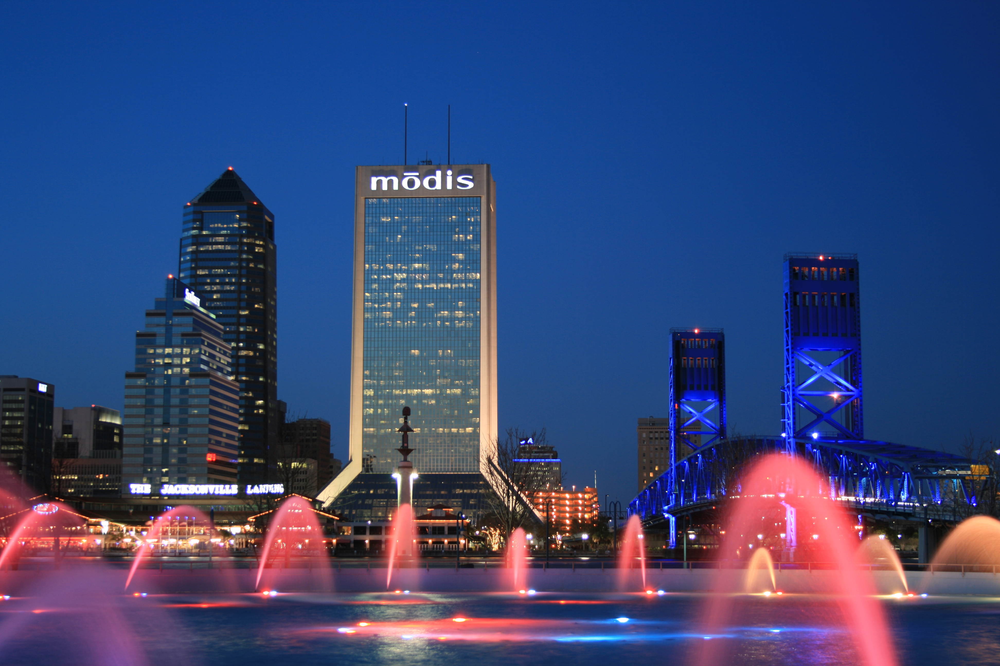
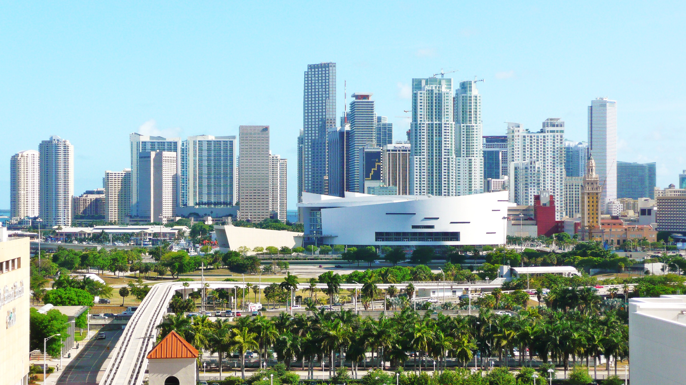
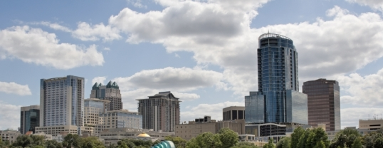
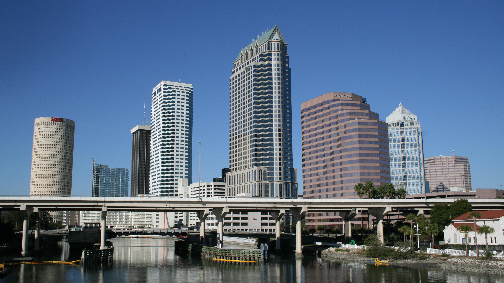
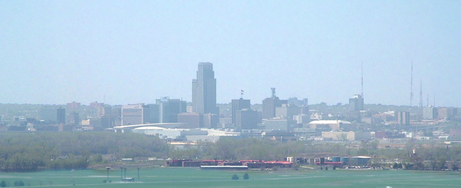

Tomamos como hipotesis que nos dedicamos a manejar una cartera de clientes con determinadas caracteristicas.
Lo que nos permite anticipar de antemano cuales van a ser sus necesidades y de esta manera poder realizar los
mejores reportes de calidad del mercado inmobiliario de EE. UU. para aumentar la ganancia y
reducir pérdidas del
inversionista, evaluamos casos donde tienen mucha probabilidad de crecer económicamente y todavía no estan
totalmente
desarrolladas. . Los datos del mercado inmobliario provienen de Zillow house market
Florida vs Nebraska
Pasar mouse por encima del mapa para conocer los estados
Breve recorrido por Florida
Pasar mouse por encima de las imagenes para conocer las ciudades

Florida-Jacksonville.

Florida-Miami.

Florida-Orlando.

Florida-Tampa.
Breve recorrido por Nebraska
Pasar mouse por encima de las imagenes para conocer las ciudades

Nebraska-omaha.
Nebraska-Lincoln
Gran Island
Es necesario realizar la siguiente comparacion empezando por la tasa de desempleo.
Desempleo Nebraska vs Florida Diciembre 2022
Para resolver cuestiones relacionadas con la inversión vemos que si tomamos en cuenta la tasa de desempleo
en
el estado de Nebraska hay un 2.7 % de desempleo.Indicando que es más bajo pensaríamos que
es mejor que otros estados como Florida que tiene una tasa de desempleo del % 2.7, ya que
tendría más desarrollo económico por ende la propiedad sería más fácil de vender.
Continuando con el ejemplo de Nebraska vemos otros factores importantes como el clima 🌅.
Clima Nebraska vs Florida
Nebraska posee un clima semiárido. Experimenta cambios bruscos de temperatura y del
viento.
Resulta difícil de predecir. En invierno, las temperaturas son bastante bajas y las de verano,
excepcionalmente
calientes.
La temporada de lluvia – en ocasiones tormentosa – se centra en los meses cálidos, alcanza su máximo en
junio y
desciende principalmente por las noches.
Florida, por el gran territorio costero, es el único estado continental de los Estados
Unidos
con clima
tropical el otro estado con este tipo de clima es Hawái
Seguimos con el nivel de urbanización. 🏨
Economía Nebraska vs Florida
Nebraska se sustenta en la ganadería, cría de cerdos, extracción de azúcar y cultivo de
maíz,
soja,
heno,
strigo, sorgo, papas y granos. Su industria abarca las áreas de procesamiento de alimentos, fabricación de
maquinaria y equipos eléctricos, imprentas y editoriales.
Sus atracciones turísticas comprenden zoológicos de renombre mundial, acuarios, bosques de lluvia tropical y
escenarios espectaculares de muchos lagos y ríos.
Asimismo, existe una tradición profundamente arraigada del oeste norteamericano, museos de historia militar
y de
la aviación e innumerables oportunidades para la caza y la pesca.
Florida es reconocida por sus parques de atracciones (como Walt Disney World, Bush
Gardens y Universal Studios Florida), sus cultivos de cítricos, sus verduras de invierno, el Centro Espacial
Kennedy, y como un destino
turístico popular entre los jubilados estadounidenses.
De
cara al mercado inmobiliario de 2022 📈
En 2022, se espera que la tasa hipotecaria fija a 30 años aumente a un promedio del 3,5% desde el 3% en 2021.
Con este aumento de las tasas, es probable que las ventas de viviendas usadas disminuyan ligeramente de 6,12
millones en 2021 a 5,9 millones en 2022.
Se espera que los cuellos de botella en la cadena de suministro se alivien en 2022, salvo que se produzca un
resurgimiento importante de la COVID, y el desempleo seguirá cayendo. En estas condiciones, se espera que el
total de nuevas unidades de viviendas unifamiliares y multifamiliares iniciadas aumente modestamente a 1,67
millones. La construcción de viviendas irá al ritmo de la formación de hogares (1,75 millones en 2020).
Se espera que los precios de las viviendas aumenten, aunque a un ritmo modesto, inferior al 5%.
2022
Housing Market
Resumen
En resumen, considerando las condiciones económicas y proyecciones para el mercado inmobiliario en 2022, la
decisión de invertir en Florida emerge como la opción más atractiva y sólida. La
diversificación económica del
estado, que abarca desde parques de atracciones hasta el Centro Espacial Kennedy, su gran costa y cultivos
de
cítricos,
proporciona una mayor estabilidad en comparación con la dependencia significativa de
Nebraska
en la ganadería y
la agricultura.
A medida que las tasas hipotecarias experimentan un aumento moderado en 2022, Florida,
respaldada por su
desarrollo económico continuo y atractivo clima, se posiciona como un mercado inmobiliario robusto. Se
espera
que la disminución proyectada en las ventas de viviendas usadas a nivel nacional no afecte de manera
significativa a Florida, donde la diversificación económica actúa como un amortiguador ante
las
fluctuaciones
del mercado.
Además, la perspectiva de una mayor construcción de nuevas unidades de viviendas en
Florida, en
comparación con
otros estados, señala un crecimiento sostenido respaldado por la formación de hogares y el descenso del
desempleo. Aunque se proyecta un aumento moderado en los precios de las viviendas, este incremento se espera
que
sea inferior al 5%, lo que sugiere un entorno favorable para los inversores que buscan retornos consistentes
y
sostenibles.
En conclusión, las condiciones económicas, la diversificación y el atractivo mercado inmobiliario proyectado
para 2022 respaldan de manera contundente la elección de Florida como la opción preferida
para
inversiones,
ofreciendo no solo mayores posibilidades de retorno de inversión, sino también una menor exposición a
riesgos en
comparación con otras regiones.